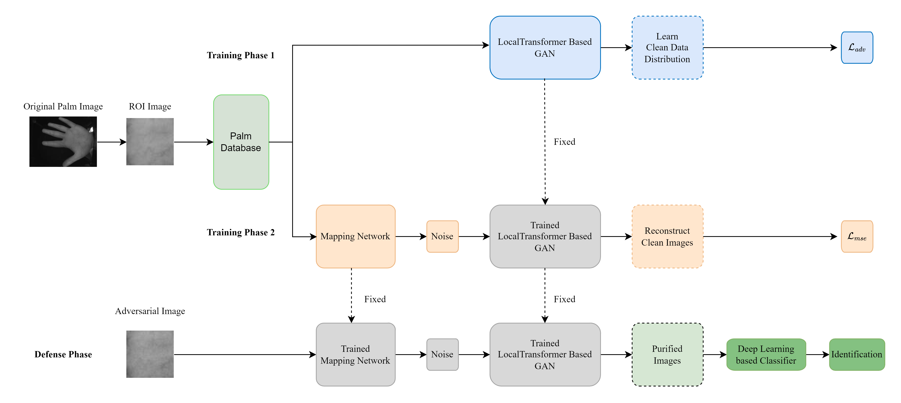

|
Song Ruan 阮松Ph.D. CandidateAffiliation: College of Computer Science, Chong Qing UniversityCurrent Address: Chong Qing, China Email: rsmung@cqu.edu.cn • GitHub |
Biography
- Introduction
- Education Background
- 2022.09-Present • Ph.D. Candidate • Supervisor: Prof. Yantao Li and Prof. Huafeng Qin.
- 2020.09-2022.09 • M.sc. Candidate • Supervisor: Prof. Yantao Li and Prof. Huafeng Qin.
- 2016.09-2020.06 • B.Eng. Degree
-
Mr. Song Ruan is a Ph.D. Candidate
in the College of Computer Science, Chong Qing University(CQU).
His research focuses on deep learning techniques for biometric authentication, with particular interests in AI Security and Domain Adaptation.
College of Computer Science, Chong Qing University (CQU), China
College of Computer Science, Chong Qing University (CQU), China
School of Automation, Wuhan University of Technology (WHUT), China
Programming Skills
Programming Languages |
C/C++, Java, Python |
Frameworks |
Pytorch, Tensorflow |
Publications
* indicates corresponding authorship
|  |
Yantao Li, Song Ruan, Huafeng Qin*, Shaojiang Deng, Mounim A. El-Yacoubi. Transformer based Defense GAN Against Palm-vein Adversarial Attacks IEEE Transactions on Information Forensics and Security(TIFS), Jan 2023 [Paper] |
Awards and Honors
- [2023.09] • Outstanding student of Chongqing University
- [2021.09] • Outstanding student of Chongqing University
- [2018.05] • Third prize of The 11th Central China Mathematical Modeling Invitational
Reviewer
- Conference Review
- ICONIP 2023, The 30th International Conference on Neural Information Processing
- CHASE 2023, The 8th IEEE/ACM International Conference on Connected Health: Applications, Systems and Engineering Technologies
- Journal Review
- IEEE IoTJ, IEEE Internet of Things Journal
Teaching Assistant
- Fundamentals of Program Design (C++), CQU, 2023 Fall
- Database System, CQU, 2023 Spring
- Fundamentals of Program Design (C++), CQU, 2022 Fall
- Fundamentals of Program Design (C++), CQU, 2021 Fall
© Song Ruan | Last updated: Oct. 2023
Acknowledgement: This page is based on this template.